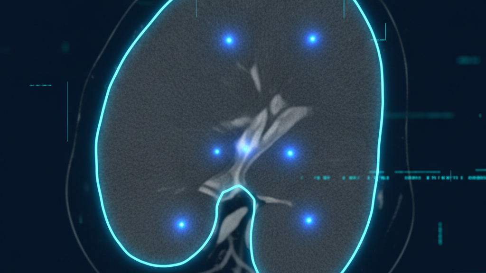

What exists, what AirPMD can actually use, and where the licensing traps are.
It is a text-only medical LLM. It has no imaging head. It cannot render, segment, or reason over a 3D volume. If the goal is “visualize what's going on in a healthcare system,” AntAngelMed is the wrong tool for the graphics and the right tool for the reasoning around it.
The genuine 3D models for your use case are the NVIDIA medical-imaging family (NV-Reason-CT, CT-CLIP, RadViLLA, NV-Generate-CT) — those are listed in section 3.
Seven families, all open-weight. Sorted by relevance to AirPMD.
| Model | Params | Context | Benchmarks | Access |
|---|---|---|---|---|
AM AntAngelMedMedAIBase/AntAngelMed |
103B total 6.1B activeMoE 1/32, 256 experts |
128K | HealthBench #1 open MedAIBench top-tier MedBench #1 |
Open, ungated license conflict |
FP8 AntAngelMed-FP8quantized + EAGLE3 |
103B / 6.1B active | 128K | Same as base | Open, ungated lower vRAM |
I4 AntAngelMed-INT4ModelScope |
103B / 6.1B active | 128K | Same as base | Open2× Ascend 910B, or 1× P800 / PPU 810 |
OM OpenMedfamily, 481 models |
0.5B → 120B+ | — | 380+ models at launch (Jul 2025) 29.7M downloads |
Open, Apache-2.0also on AWS Marketplace |
MG MedGemma 1.5google/medgemma-1.5-4b-it |
4B (multimodal VLM)127B sibling exists | multi-slice CT/MRI | CT-RATE macro F1 23.5–27.0 | Open, Apache-2.0free research + commercial (HAI-DEF) |
QW Qwen3-VL-Embedding-2BQwen/Qwen3-VL-Embedding-2B |
2B (vision-language embed) | 32K | MMTEB 67.88 MMEB-V2 77.9 (8B) |
Open, Apache-2.0handles video frames natively |
42 Med42m42-health/Llama3-Med42-8B |
8B (LLaMA-3 based) | — | Med42-v2 suite (8B / 70B) | Open-access |
BailingMoeV2ForCausalLM — 103B total parameters, 6.1B active per token. 256 experts, 8 per token, 1/32 activation ratio.
That efficiency is the real story: it matches ~40B dense-model quality while only activating 6.1B. On H20 hardware it exceeds 200 tokens/s, roughly 3× a 36B dense model.
Three stages: continual pre-training on medical corpora → supervised fine-tuning on heterogeneous instruction data → GRPO reinforcement learning with task-specific reward models that shape empathy, structure, and safety boundaries.
Built on inclusionAI/Ling-flash-2.0 by Zhejiang Province Health Information Center,
Ant Healthcare, and Zhejiang Anzhen'er Medical AI.
config.json).Licensing conflict — resolve before any commercial use.
The Hugging Face cardData says Apache-2.0. The README's own License section says
MIT, pointing at the inclusionAI/Ling-V2 licence. Those are different documents with
different terms. This is the single biggest open item on the model and it needs a decision before
it goes anywhere near a client deliverable.
Maturity signal. 152 downloads on the main repo, 107 on the FP8 variant. Chinese-language README. Release pipeline still maturing. Treat as promising, not yet battle-tested.
Don't load it locally. 103B is not a Windows-workstation model. Serve it through vLLM/SGLang, or call the hosted API at antangelmed.tbox.cn.
These are the models that actually render, segment, and reason over 3D volumes. All NVIDIA-family unless noted; all in the NVIDIA HF org or MONAI ecosystem.
Native 3D VLM for chest/abdominal CT. Radiology report generation, visual Q&A, and chain-of-thought reasoning over full volumes.
How it works: 384×384×384mm volume → 24×24×24 grid of 13,824 visual tokens → Qwen3.5-4B LLM, with a 3D ViT (Primus/Colipri) and 3D MRoPE.
Score: macro-F1 0.614, macro-AUROC 0.871 on CT-RATE. Trained on ~550K QA pairs from 70,111 CT volumes. NIfTI input.
3D latent diffusion for synthetic CT generation — data augmentation and rare-condition synthesis.
Capacity: up to 512×512×768 voxels, spacing 0.5–5.0mm, 127 anatomical classes with paired segmentation masks.
research only not a clinical product
3D latent diffusion for synthetic MR — T1 / FLAIR / T2 / SWI, with optional anatomical annotations. 240M params, 3D UNet + attention, MONAI.
non-commercial NVIDIA OneWay licence — academic research only
3D contrastive vision-language pretraining on chest CT. Self-supervised multi-abnormality detection and case retrieval. Trained on CT-RATE.
Hardware: A100 80GB recommended for training. 3D ViT.
3D VLM for radiology across chest, abdomen, and pelvis. Mount Sinai + NVIDIA collaboration.
Scale: 75K 3D CT scans, 1M+ visual Q&A pairs.
3D chest-CT vision-language chat model — CT-CLIP vision encoder paired with a pretrained LLM.
Scale: 2.7M+ VQA pairs from CT-RATE.
vista3d, brats_mri_segmentation, brain_image_synthesis_latent_diffusion_model, renalStructures_UNEST_segmentation, wholeBrainSeg_Large_UNEST_segmentation, retinalOCT_RPD_segmentation.
Broadest coverage of any single source here — segmentation, synthesis, and organ-specific tasks.

SegmentationMedical image segmentation, 2D and 3D. The general-purpose promptable segmenter for medical volumes.
wanglab/MedSAM2
AntAngelMed as the reasoning layer of an AirPMD / VidiFlow BPMN workflow.
No imaging head — it cannot render, segment, or reason over 3D volumes.
Medical NLP in the workflow: MEDIUM. AntAngelMed works well as the medical-reasoning layer of an AirPMD/VidiFlow BPMN workflow — ingesting clinical notes, synthesizing capacity and occupancy reports, triaging bed and resource requests, and writing structured summaries that VidiCore/VidiFlow nodes consume.
Direct 3D visualization: LOW. AntAngelMed has no imaging head. It cannot render, segment, or reason over 3D volumes. It is not a drop-in for the imaging models whose outputs flow into your visualization graph.
Qwen3-Embedding-0.6B +
Qwen3-VL-Embedding-2B — keep those; the VL variant handles image and video frames
natively and is the recommended local path.| Source | Licence | Commercial use |
|---|---|---|
| AntAngelMed | Apache-2.0 vs MIT conflict | Resolve first |
| AntAngelMed FP8 / INT4 | Same family | Same conflict |
| OpenMed family | Apache-2.0 | Yes |
| MedGemma 1.5 | Apache-2.0 (HAI-DEF) | Yes |
| Qwen3-VL-Embedding-2B | Apache-2.0 | Yes |
| NV-Reason-CT / NV-Generate-CT | Open R&D | Research; no clinical claim |
| NV-Generate-MR | NVIDIA OneWay | Academic only |
| CT-CLIP / CT-RATE / MONAI | Open research | Research |
NVIDIA's own wording matters here: these are “not an autonomous diagnostic system or a cleared clinical product.” Nothing in this list is FDA-cleared. Any client-facing claim about clinical capability needs counsel review before it ships.